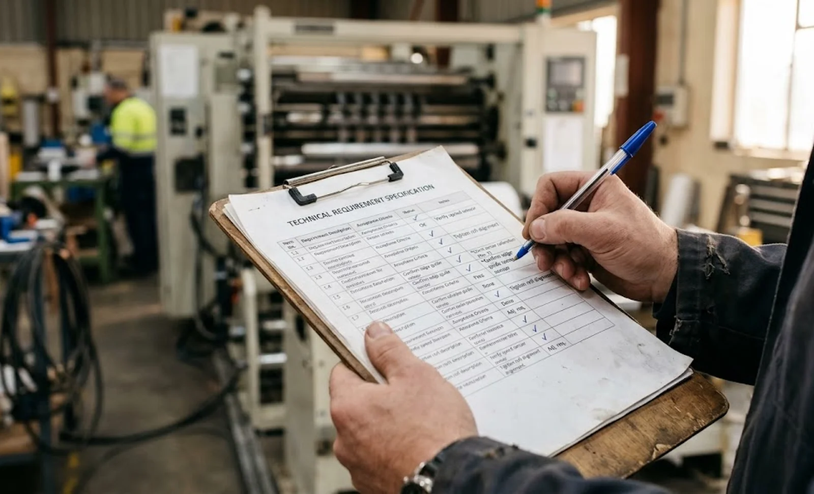

Published November 1, 2026 | By HDPTH Technical Editorial Team
Most slitter rewinder projects start backwards: a quotation arrives first, and the buyer’s requirements are reconstructed afterwards to justify the choice. A user requirement specification reverses the order. It is a short, buyer-owned document — often ten pages — that describes the products, the numbers and the conditions the machine must satisfy, issued to every shortlisted supplier before pricing begins. Suppliers price against your problem instead of against a template machine, and the document quietly becomes the backbone of the contract and the FAT.
Block one: product and material data
The first block describes everything the machine will touch. For each product, list web type and construction, grammage or thickness with its tolerance, maximum and minimum web width, the slit width range and the number of lanes, parent roll diameter and mass, core type and dimensions, and finished roll diameter and weight. Suppliers design around extremes, so flag the worst-case product explicitly: the thinnest film, the heaviest parent roll, the most elastic nonwoven, the combination that runs at the lowest speed today.
Block two: performance and quality requirements as numbers
This block decides the machine, and it lives or dies by specificity. Speed must appear with a condition: “350 m/min on 30 g/m² spunbond at 1200 mm width with 1000 mm finished diameter”. Tension range needs a control accuracy — a percentage of full scale or an absolute figure in newtons — because a range without accuracy hides the drive and control budget behind it. Slit width tolerance needs a number, a measurement method and the length over which it holds. Add changeover time for a defined change, splice or restart behavior, and roll quality criteria expressed as measurable limits rather than adjectives. Every line should be phrased the way you would want to read it later in a factory acceptance test.

Block three: utilities, site and integration
Write down what your site offers, and require the machine to fit it. State the available power supply voltage and frequency, compressed air pressure, floor loading and any foundation or pit limits, ambient temperature and humidity range, and the ceiling height under your crane. Integration requirements belong here too: the safety performance level you expect, the data protocols the machine must speak to your MES or SCADA layer, and the operator interface language and skill assumptions your team can support.
Block four: documentation, training and acceptance
The final block defines what “delivered” means. Require the documentation set: mechanical and electrical drawings, the CE technical file where applicable, wiring diagrams, lubrication schedules, spare parts lists with part numbering, and operator and maintenance training with stated hours. Then the acceptance clause, which is the sentence that gives the URS teeth: acceptance will be per a protocol agreed before shipment, run on the buyer’s material, with pass criteria taken from this specification. That single clause converts the whole document from a wish list into a contract instrument, and it is why the requirement wording in block two must stay testable.
Common URS mistakes that surface at the FAT
Four failures repeat across projects. Copying a supplier brochure into the URS, which imports marketing language that neither party can test. Specifying only the average product, leaving the hardest web to be discovered during commissioning. Leaving utilities out because “the machine is standard”, which is how buyers end up paying for power upgrades and air treatment they assumed were included. And issuing different requirement lists to different suppliers, which makes every quotation structurally incomparable and forces you back onto the supplier’s own sheets. Each mistake is cheap to avoid at document stage and expensive at acceptance.
Issue it, score the responses, freeze the baseline
Send the identical URS to every shortlisted supplier and require a line-by-line response: met, met with deviation, offered as a priced option, or unanswered. Score the responses the way you would score a comparison matrix — deviations and options are not automatic rejections, but they must be priced and explained, and blanks count as risk. Then freeze the accepted URS as a contract annex. When the FAT protocol later repeats your requirement lines with measurement methods and pass criteria, the machine that arrives is the machine you specified, and any gap has an owner.
Two next steps follow naturally from a finished URS: verifying the numbers on real material before the order, covered in our Slitter Rewinder Material Trial Testing: A Buyer’s Guide, and reading the vendor’s answer document critically once quotations arrive, which is the subject of our How to Read a Slitter Rewinder Spec Sheet: Buyer’s Guide. To see how a structured requirement set reads on a real machine range, review the HDPTH high-speed slitting machines series.
Want a Second Pair of Eyes on Your URS?
Send HDPTH your draft requirement specification. Our application engineers will mark every line as testable, ambiguous or missing — and return the acceptance criteria we would propose for the same document, so your URS and our FAT protocol agree before the order is placed.
Submit Your Project InquiryFrequently asked questions
What is a URS and why does a slitter rewinder project need one?
A user requirement specification is the buyer-owned document that states, in testable terms, what the machine must do on your materials. It converts tribal knowledge into a numbered requirement list issued to every supplier before quotation. A URS does not design the machine; it defines the problem precisely enough that competing designs can be compared fairly and the winner verified at the factory acceptance test.
Which material data must a slitter rewinder URS contain?
For every product the machine will run: web type and construction, grammage or thickness with tolerance, maximum and minimum width, slit width range and count, parent roll dimensions and mass, core type and size, and finished roll diameter and weight. Always add the worst-case combination — the thinnest or most elastic web, the heaviest parent roll — because suppliers design tension and drive capacity around the hardest product, not the average one.
How specific should performance requirements be in a URS?
Every performance requirement needs a number, a condition and a measurement method. Speed must be stated with a material, width and roll diameter. Tension range must carry a control accuracy, typically a percentage of full scale. Tolerances must state what is measured and how. A requirement written as ‘high speed’ or ‘precise tension’ cannot be quoted against, cannot be priced honestly and cannot be tested.
What utility and installation requirements belong in the URS?
State what your site offers and what the machine must accept: available power supply voltage and frequency, compressed air pressure, floor loading and pit or foundation limits, ambient temperature and humidity range, and ceiling height under the crane. This costs nothing at quotation and prevents the change orders that follow when a machine arrives needing conditions your building cannot provide.
How is a URS used during the factory acceptance test?
The URS is the source document for the FAT protocol. Each testable requirement becomes a test line with its measurement method, sample size and pass criterion, run on your material wherever possible. When the contract says acceptance is per the agreed protocol, and the protocol repeats the URS numbers, the specification becomes enforceable.
How do I score supplier responses to a URS?
Mark every line as met, met with deviation, offered as an option, or unanswered. Deviations and options are not automatic rejections, but they must be priced and technically explained; blank answers are risk. A supplier who returns a fully annotated URS with conditions attached is demonstrating how it will behave during commissioning, so weight the response quality as heavily as the price it accompanies.